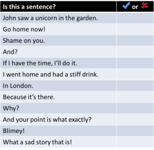
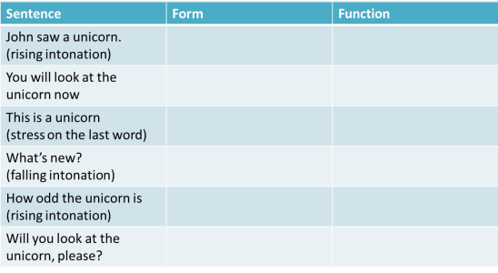

The sentence: an essential guide

No, not that sort of sentence.
Note: if you don't know the difference between a subject and an object or your complement from your elbow, it may be wise to follow the basic ELT training course grammar section which introduces some fundamental concepts.
At some point, all approaches to English grammar take the sentence as a basic unit of language. But there's a problem:
 |
What is a sentence? |
Of the following, which, to you, constitutes a sentence?
Click on the table when you have looked at each one and decided whether
it is a sentence in English.

Whether you had the same answers or not doesn't matter at this stage. Look again and decide for yourself what the criteria are to get a tick in the box. There are two essential criteria. Click here when you have decided what they are.
- A sentence must contain a finite verb (that is a verb with a tense or person marker)
- A sentence must contain a subject (usually a noun) which governs the verb
There's an exception to Rule 2 in the table. What is it?
Right. The sentence Go home now! gets a tick in the box but has no obvious subject. The subject of imperatives like this is usually implied in English.
Many grammars will use the term 'clause' instead of 'sentence'.
There's a good reason for this which does not need to concern us here. All
you have to remember is that a clause is a group of words containing a
verb. So, for example, I'm going is a clause but on
Tuesday is not a clause (it's a phrase).
There are four types of sentence in English:
| Sentence type | What it is | Example | Comment |
| Simple | One noun and one (finite) verb | Mary didn't believe him. | This is a finite clause which can stand alone |
| Compound | Two clauses (or more) of equal importance | Mary didn't believe him but John was adamant. | Both parts of a compound sentence can stand alone. Usually, they are joined with something like and, or, but |
| Complex | Two clauses, one of which is subordinate (depends on) the other | Mary didn't believe him although he seemed very sure. | The second part of this is a subordinate clause: it cannot stand alone and retain the same meaning |
| Compound-complex | A combination of compound and complex sentences | Mary didn't believe him although he seemed very sure but I accepted what he said. | These sorts of sentences are sometimes difficult for learners to unpack and occur more in writing than speaking |
 |
What do sentences do? |
Sentences have four fundamental functions in language. Decide what the function of each sentence below is and then click on the table for an answer and some comments.

 |
Unfortunately ... |
... there's another problem. The sentence type does not always
define its function. For more on this, see
the guide to form and
function but if you have already done that, the following will be
straightforward.
Can you complete the table again, stating what the form and function of
each sentence is? Click on it when you have an answer.

Generally, people expect the form to indicate the function so this sort of mismatch will cause problems for learners of the language. There are general rules, however.
- Any form of sentence can be interrogative with the right intonation. (Some languages rely wholly on intonation and have no question form at all.)
- Offers are usually in the form of imperatives or questions (a phenomenon common to many languages) so we can have, e.g., Would you like a drink? or Have a drink. etc.
- Statements are frequently used as imperatives so we can have You left the door open meaning Please close the door.
- Interrogative forms can make positive or negative statements so we can have Do you ever listen? meaning You aren't listening and You're driving, are you? meaning You are obviously driving.
- Tag questions such as She's managing the office, isn't she? can function as real questions when the intonation rises and as simple positive statements when it falls.
Negatives
Can you make two types of negative sentences from this positive one? Click here when you have noted them down.
She saw a unicorn.
- She didn't see a unicorn. This is a negative statement.
- Didn't she see a unicorn? This is a negative question.
We can also make negative commands, of course, as in Don't look at the unicorn.
Interrogatives
Can you make four different question forms from the same sentence (She saw a unicorn)? Click here when you have a list.
- Did she see a unicorn?
This is a simple yes/no question, sometimes called a closed question when you ask it in class. It may also evince the answer I don't know., of course. - Tag questions:
She saw a unicorn, didn't she? (positive statement + negative tag). Intonation usually rises if this is a question rather than a statement asking for confirmation.
She didn't see a unicorn, did she? (negative statement + positive tag). Again, intonation usually rises if this is a question rather than a statement asking for confirmation.
She saw a unicorn, did she? (positive statement + positive tag). Depending on the intonation, this can express some form of threat or incredulity.
There a separate guide to question tags on this site. - Did she see a unicorn or was I hearing things?
This is usually referred to as an 'alternative question'. It's nearly always formed with or. - Wh- questions:
Who saw a unicorn?
Where did she see a unicorn?
When did she see a unicorn?
Why did she see a unicorn?
Notice that the last one of these questions requires a more elaborate answer than the others. That can be a useful thing when you are asking questions of your learners and want them to say more than the garden.
| Related guides | |
| negatives and questions | for a more on these two areas |
| form and function | an essential guide to how form differs from function and vice versa |
| sentence grammar essentials | for a guide to how sentences can be broken down and understood |
| basic course grammar section | for a straightforward guide to how sentences are formed |